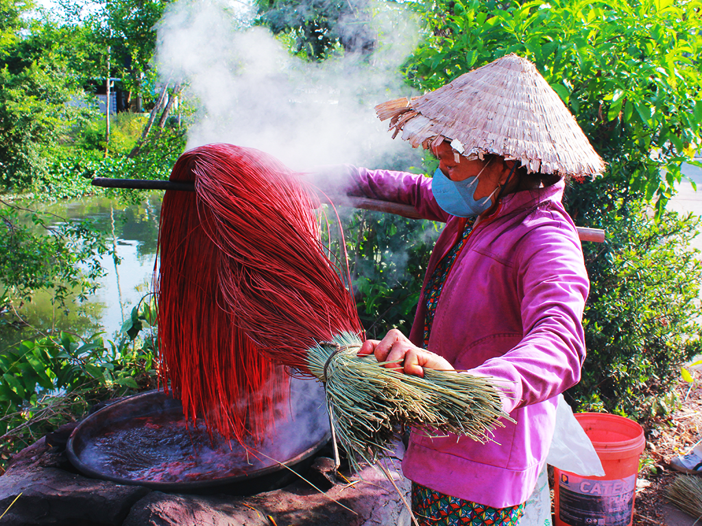
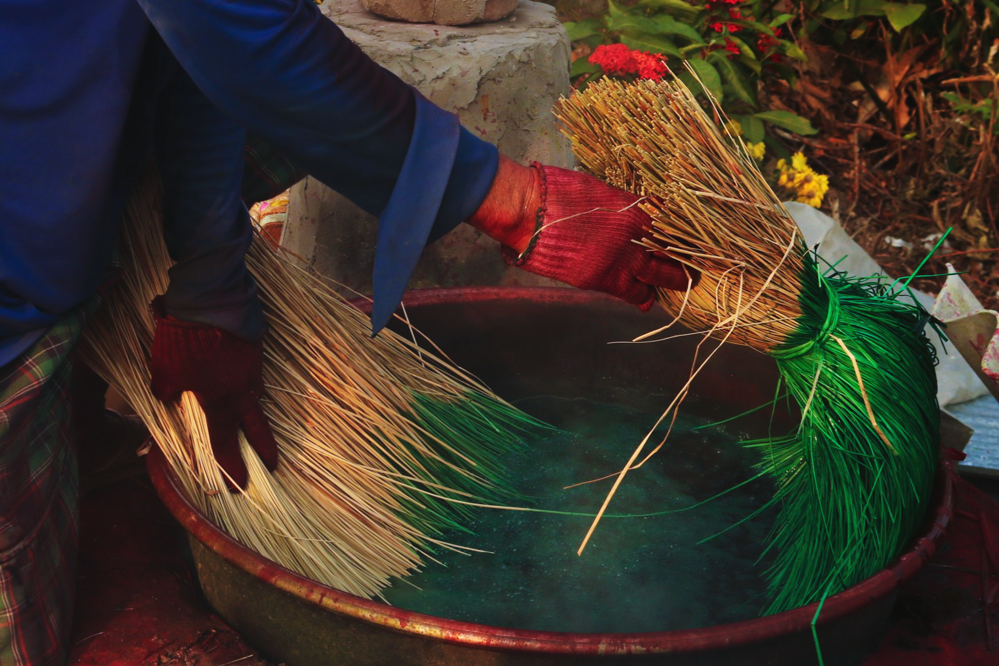
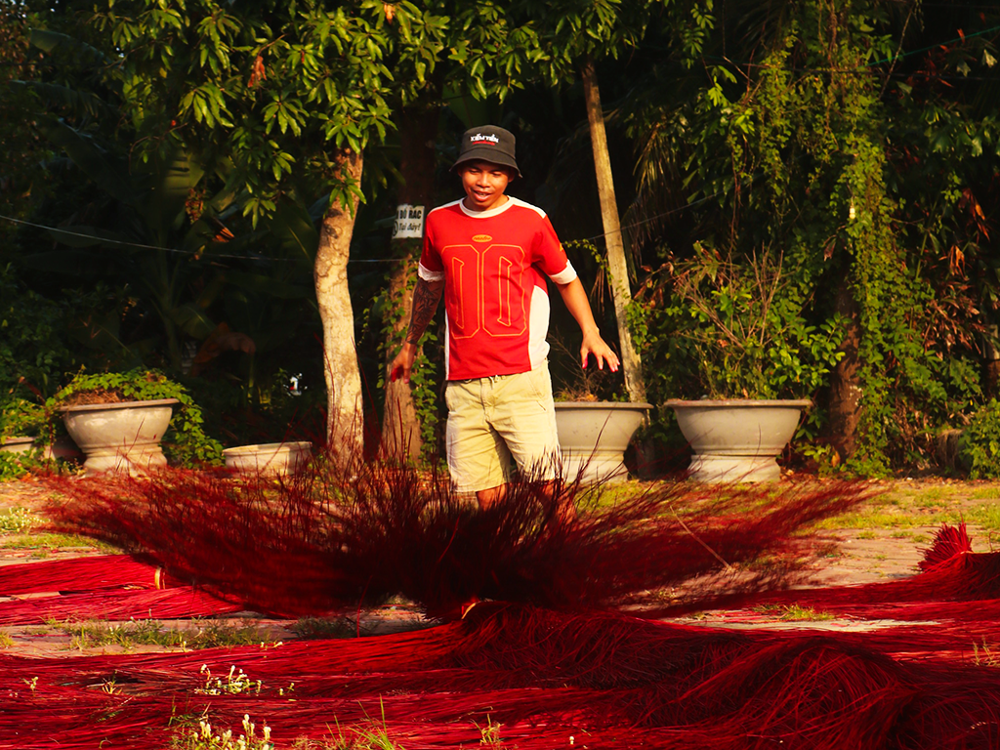
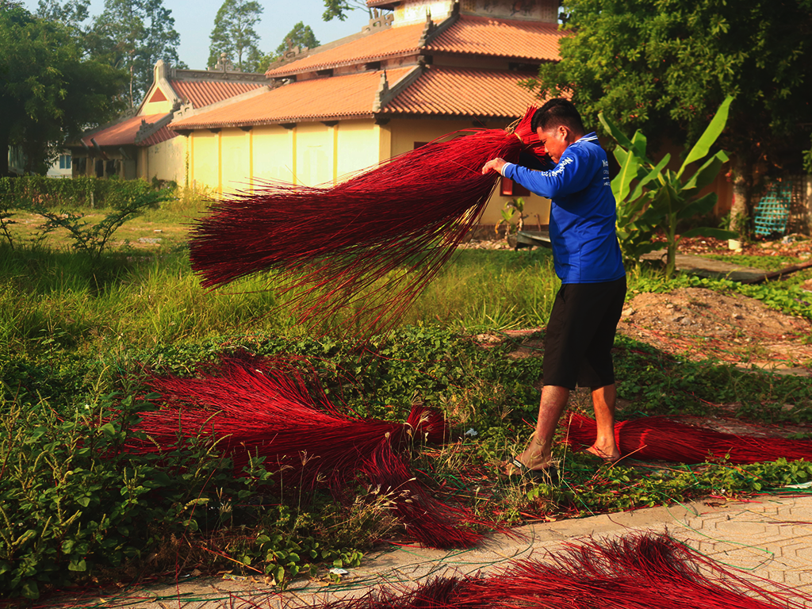
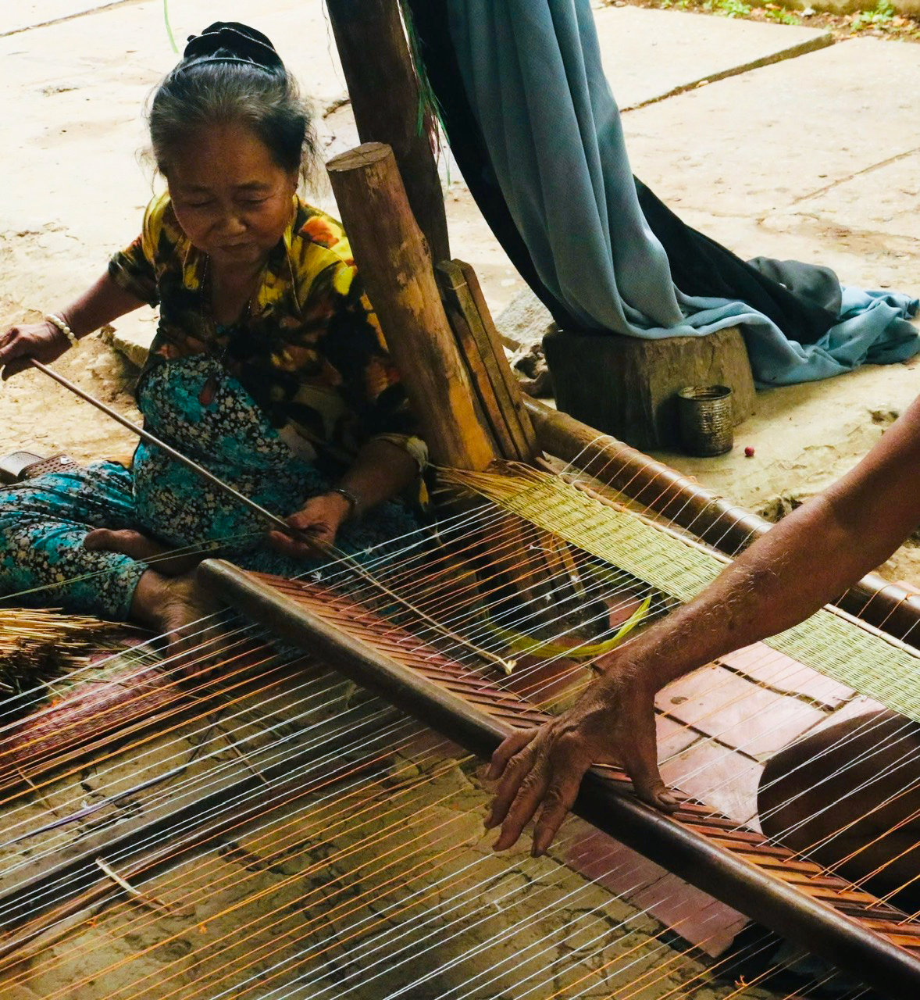
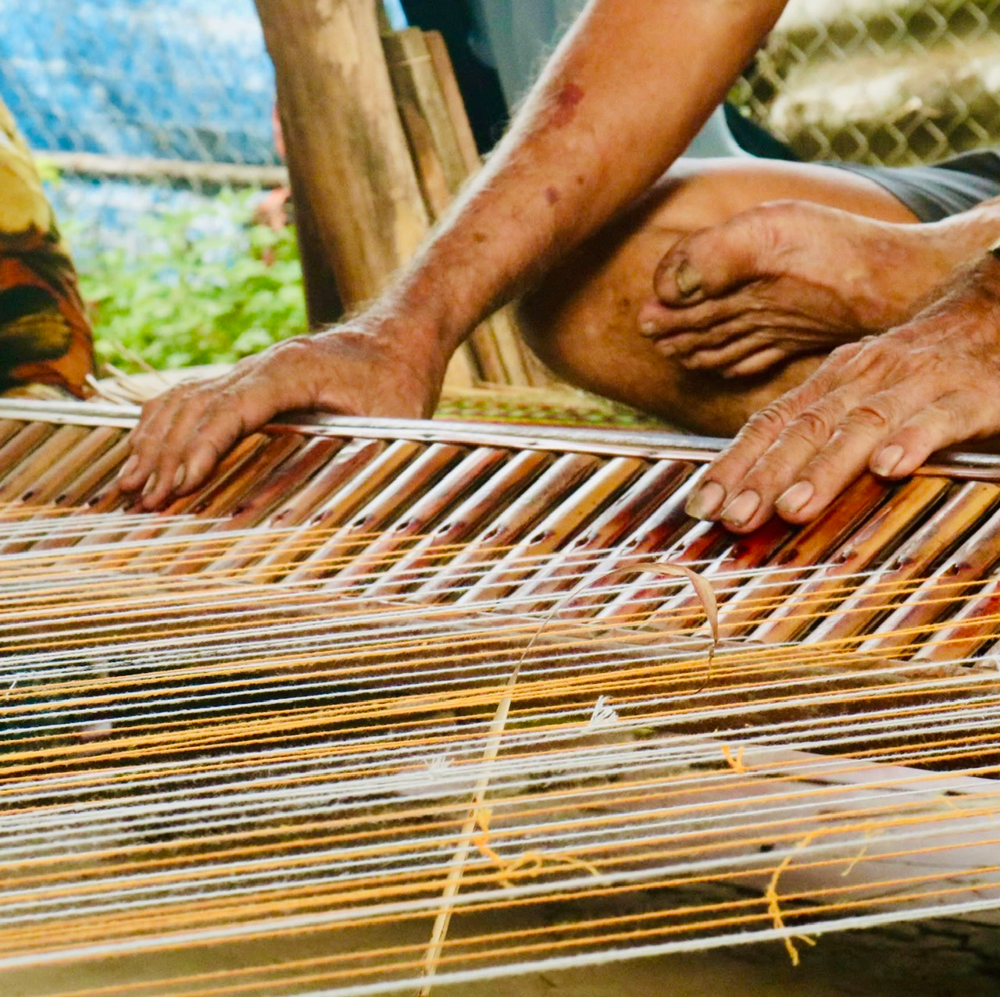

CHIẾU ĐỊNH YÊN
TẤM CHIẾU TRẢI DÀI TRĂM NĂM LỊCH SỬ

Cổng chợ - Bến lác
Chợ Chiếu hiện ra tĩnh lặng dưới ánh nắng sớm, đón chờ những chuyến ghe chở đầy nguyên liệu. Những cuộn lác xếp chồng lên nhau trên bến, chuẩn bị bước vào một chu trình mới, nơi bàn tay con người sẽ biến chúng thành những tác phẩm rực rỡ sắc màu.

Giữa những lo toan của buổi chợ, niềm vui đôi khi chỉ đơn giản là một câu chuyện phiếm bên tách trà, một nụ cười hồn hậu giữa những người bạn nghề. Trên chiếc ghe chở đầy lác, nhịp sống cứ thế trôi đi - bình dị, mộc mạc nhưng tràn đầy sức sống của người dân miền sông nước.

Tiếng cười giòn tan trên sóng nước.


Chở cả hồn quê trong từng sợi lác.
Sắc đỏ rực của mũi thuyền hòa quyện cùng màu xanh thô mộc của những bó lác tạo nên một góc nhìn đầy tính nghệ thuật. Ở đó, người ta thấy được sự giao thoa giữa phương tiện mưu sinh và tinh hoa làng nghề, mỗi góc nhỏ đều kể về sự cần cù và tình yêu với nghề dệt truyền thống.

Những cuộn lác được buộc chặt, xếp ngay ngắn, mang theo hương vị nồng nàn của đất phù sa và cái nắng gắt của miền Tây. Chúng nằm đó, lặng lẽ đợi chờ những đôi bàn tay khéo léo đan cài để trở thành những tấm chiếu bền bỉ, gắn bó với giấc ngủ của bao gia đình.

Gói ghém nắng gió vào từng thớ sợi.

Kỹ nghệ truyền đời.
Công đoạn nhúng màu đòi hỏi sự phối hợp nhịp nhàng giữa đôi tay và cơ thể để bó lác được thấm màu đều nhất. Chiếc nón lá, bộ quần áo lao động giản dị hòa quyện vào khung cảnh xanh mát của vườn tược xung quanh, tạo nên một bức tranh lao động hài hòa.
Những vạc màu sôi sùng sục tỏa ra lớp khói dày đặc, bao phủ lấy người thợ trong một không gian mờ ảo. Công việc nhuộm lác đòi hỏi sức bền và kinh nghiệm xử lý nhiệt độ chuẩn xác để màu thấm sâu vào từng thớ sợi.

Sức nóng từ lò nhuộm

Sức nóng từ lò nhuộm
Những vạc màu sôi sùng sục tỏa ra lớp khói dày đặc, bao phủ lấy người thợ trong một không gian mờ ảo. Công việc nhuộm lác đòi hỏi sức bền và kinh nghiệm xử lý nhiệt độ chuẩn xác để màu thấm sâu vào từng thớ sợi.
Từng bó lác thô mộc sau khi được nhúng vào vạc màu sẽ khoác lên mình sắc đỏ rực rỡ đặc trưng của làng chiếu. Hơi nóng tỏa ra cùng với nhịp chuyển động dứt khoát của người thợ tạo nên một khung cảnh sống động.

Sắc đỏ Định Yên

Sắc đỏ Định Yên
Từng bó lác thô mộc sau khi được nhúng vào vạc màu sẽ khoác lên mình sắc đỏ rực rỡ đặc trưng của làng chiếu. Hơi nóng tỏa ra cùng với nhịp chuyển động dứt khoát của người thợ tạo nên một khung cảnh sống động.
Bên cạnh sắc đỏ truyền thống, sắc xanh lục cũng là một thành phần không thể thiếu để tạo nên những hoa văn phức tạp trên tấm chiếu. Người thợ nhuộm đeo găng tay bảo hộ, cẩn trọng nhúng từng phần của bó lác vào nồi nước màu xanh sẫm.

Vạc màu xanh lục

Vạc màu xanh lục
Bên cạnh sắc đỏ truyền thống, sắc xanh lục cũng là một thành phần không thể thiếu để tạo nên những hoa văn phức tạp trên tấm chiếu. Người thợ nhuộm đeo găng tay bảo hộ, cẩn trọng nhúng từng phần của bó lác vào nồi nước màu xanh sẫm.
Ánh mắt kiên định của người thợ nhuộm hiện lên sau lớp khẩu trang và khói bụi, phản ánh sự bền bỉ của một thế hệ đang giữ gìn di sản. Bộ trang phục lấm lem màu thuốc nhuộm và tro củi là minh chứng cho sự gắn bó mật thiết giữa con người và nghề nghiệp.

Chân dung lao động

Chân dung lao động
Ánh mắt kiên định của người thợ nhuộm hiện lên sau lớp khẩu trang và khói bụi, phản ánh sự bền bỉ của một thế hệ đang giữ gìn di sản. Bộ trang phục lấm lem màu thuốc nhuộm và tro củi là minh chứng cho sự gắn bó mật thiết giữa con người và nghề nghiệp.
Dưới cái nắng gắt của vùng đất Đồng Tháp, người thợ lặng lẽ tuyển lựa từng sợi lác đã thấm đẫm sắc đỏ. Ánh nắng chiếu rọi làm nổi bật cấu trúc thô mộc của nguyên liệu, đồng thời ghi lại khoảnh khắc tập trung của người thợ.

Công đoạn tuyển lựa sợi

Chuyến xe sắc màu
Khi xe tải nổ máy, những bó lác đỏ thẫm cuối cùng được xếp ngay ngắn lên thùng, chuẩn bị rời xóm nhỏ để đi xa. Người thợ quệt vội mồ hôi, dõi theo chuyến hàng mang theo sắc màu và tâm huyết của người dân Định Yên.
Một cú tung tay dứt khoát, bó lác bung ra giữa không trung tựa như một vòng tròn lửa dưới ánh hoàng hôn vàng vọt. Sức trẻ của người thợ hòa vào nhịp chuyển động của những thớ sợi, giữ lấy lửa nghề giữa những bộn bề thay đổi.

Trải lòng cho nắng

Vũ điệu sợi đỏ
Trước mái đình rêu phong, những bó lác đỏ được trải ra đều tăm tắp để đón lấy chút nắng cuối ngày. Tiếng lác chạm nhau xào xạc hòa cùng sự tĩnh lặng của không gian cổ xưa, kể lại câu chuyện về một nghề truyền thống vẫn sắt son qua bao thế hệ.
Từng vạt lác đỏ được trải dài trên thảm cỏ, đón cái nắng gắt phương Nam để kịp khô trước khi chiều xuống. Giữa những sợi lác rực rỡ, vài bông hoa dại vẫn lặng lẽ vươn lên, chứng kiến nhịp sống bền bỉ của làng nghề qua bao mùa nắng gió.

Những con sóng đỏ

Sự giao thoa của sắc màu
Nắng đứng bóng, những bó lác nhuộm đủ màu đã nằm gọn một góc sân sau buổi nhuộm sớm bên cạnh chiếc ghế gỗ đã sờn. Mọi thứ dường như đang tạm nghỉ, đợi người thợ quay lại sau giờ giải lao để tiếp tục công việc dệt nên những tấm chiếu hoa.
Dưới ánh nắng xiên qua mái hiên, người bà lặng lẽ luồn từng sợi trân mảnh qua khung dệt. Ánh sáng làm rõ hơn những nếp nhăn và chuyển động của đôi bàn tay đã gắn bó với xóm nghề quá nửa đời người.

Đôi tay nương theo sợi trân

Bên bánh xe “thời gian”
Người thợ ngồi nhỏ bé bên cạnh bánh đà to lớn của cỗ máy dệt cũ kỹ đang nhuốm màu nắng vàng. Bà lặng lẽ quan sát từng sợi lác chạy vào máy, tay nhặt nhạnh những sợi thừa giữa không gian nồng mùi cỏ khô.
Bà nghiêng mình kiểm tra lại mép chiếu, nơi những sợi lác xanh đỏ vừa được đan cài khít khao vào nhau. Tiếng máy tạm dừng, nhường chỗ cho sự tập trung của người thợ dệt bên khung cửi.

Chăm chút từng nếp chiếu

Nụ cười bên hiên xưởng
Giữa những đống lác nhuộm màu rực rỡ và khung máy xanh cũ kỹ, người bà nở nụ cười hiền hậu khi trò chuyện cùng người lữ khách ghé thăm.
Bánh xe quay tạo nên một dải mờ ảo, bắt nhịp cùng đôi tay nhanh nhẹn của người bà bên đống lác đa sắc. Tiếng máy rầm rì hòa cùng nhịp lao động tất bật, dệt nên một ngày làm việc rộn ràng giữa xóm nhỏ.

Nhịp đời rộn rã

Ánh sáng làng nghề
Ánh nắng chiếu rọi mái tóc bạc phơ của người nghệ nhân già đang tỉ mẩn bên từng nút thắt. Góc xưởng nhỏ trở nên ấm áp lạ thường khi tâm huyết của người thợ thấm đẫm vào từng thớ sợi thô mộc.
Người phụ nữ lặng lẽ bên khung dệt, đôi mắt quan sát từng sợi cước mảnh mai kéo dài vô tận. Gian xưởng mờ tối bỗng trở nên sống động bởi âm thanh đều đặn của động cơ và đôi tay đưa lác vào máy.

Nhìn qua sợi nhớ

Bức rèm của những sợi trân
Hàng trăm sợi dây cước căng tràn sức sống che khuất dáng hình người thợ đang lặng lẽ làm việc phía sau. Mỗi thớ lác lướt qua để lại những nếp dệt khít khao, gói ghém những câu chuyện chưa kể về nghề dệt truyền đời.
Cỗ máy dệt nằm im lìm dưới mái tôn, bao quanh bởi hàng chục con thoi trắng muốt và những xấp chiếu hoa vừa ra lò. Bên cạnh, những bó lác nhuộm vàng rực dựa vào cột gỗ, đợi chờ đến lượt mình bước vào nhịp dệt của buổi chiều.

Góc nhỏ của những sợi tơ.

Gian xưởng cũ
Những cỗ máy nhuốm màu thời gian xếp hàng ngay ngắn trong ánh sáng mờ ảo của gian xưởng. Từng cuộn chỉ trắng đợi chờ được đan cài, hứa hẹn sự thành hình của những tấm chiếu hoa sặc sỡ.
Bên bờ nước hiền hòa, những bó lác được treo lên để đón lấy chút gió mát thổi vào từ mặt sông. Màu của lác hòa quyện vào sắc xanh của lục bình và dòng phù sa, tạo nên một góc nhỏ bình yên của làng nghề.

Màu của dòng sông

Nhịp nhàng đôi tay
Hai người ngồi bên khung gỗ, một người đưa lác, một người dập khung cho khít khao từng nếp dệt. Tiếng lách cách vang lên đều đặn giữa gian nhà, nơi những sợi lác mảnh mai dần kết lại thành hình hài tấm chiếu dưới đôi bàn tay đã thuộc lòng từng nhịp điệu.
Những ngón tay chai sần bám chặt thanh gỗ, dồn lực nhấn xuống để mỗi sợi lác nằm đúng vị trí của nó. Dưới chân khung dệt, đôi bàn chân cũng góp sức giữ nhịp, âm thầm cùng đôi tay tạo nên sự bền chắc cho từng sản phẩm trước khi đến tay người dùng.

Gói ghém sức người vào thớ sợi

Lời thì thầm từ thớ sợi.
Những sợi lác khô nằm im lìm trong bóng tối mờ ảo của gian xưởng, đợi chờ bàn tay người thợ bắt đầu một nhịp đời mới. Phía xa, dáng hình quen thuộc vẫn lặng lẽ bên khung dệt, biến những nguyên liệu thô mộc thành những tấm chiếu mang hồn quê.
Khi những nhịp máy dừng lại, người phụ nữ ngồi xuống bên mép chiếu để chăm chút cho những đường kim, sợi cước cuối cùng. Ánh đèn vàng trong xưởng soi rõ sự kiên nhẫn của người thợ, gói ghém cả sự vẹn toàn vào từng tấm chiếu hoa vừa thành hình.

Nắn nót từng đường tơ.

Gửi gắm tâm tình vào nếp chiếu.
Đôi tay thoăn thoắt bện chặt những đầu dây, khóa lại bao công sức từ lúc nhuộm màu cho đến khi lên khung dệt. Mỗi nút thắt là một lời cam kết thầm lặng về độ bền chắc, sẵn sàng theo những chuyến xe đi khắp mọi miền.
Người thợ lặng lẽ vuốt phẳng từng nếp gấp trên tấm chiếu hoa rực rỡ vừa rời khỏi khung dệt. Trong gian xưởng còn nồng mùi cỏ khô, những xấp chiếu mới đã sẵn sàng cho hành trình rời xóm nhỏ để đi khắp mọi miền.

Sau những nhịp máy dừng.

Con đường “hoa” của làng
Những tấm chiếu hoa nối đuôi nhau trải dài dọc lối đi, vẽ nên một dải màu rực rỡ dẫn lối vào sâu trong xóm nhỏ Định Yên. Phía xa, bóng cờ đỏ bay phới trong nắng như một dấu mốc bình yên, đánh dấu nhịp sống lao động bền bỉ nơi đây.
Cơn gió thoảng qua kéo theo những trái dầu xoay tròn rồi lặng lẽ đậu lại trên những thớ lác còn thơm mùi nắng mới. Một khoảnh khắc tình cờ khi nét mộc mạc của đất trời tìm thấy điểm tựa trên thành quả lao động của con người làng nghề.

Sự dừng chân của thiên nhiên.